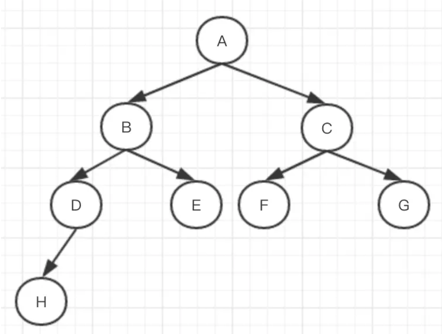
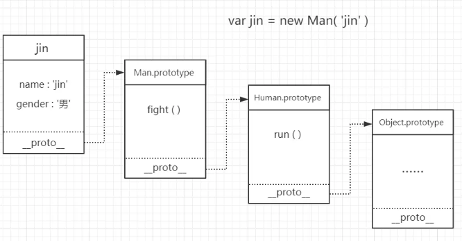

1.问：（滴滴、饿了么）写 React / Vue 项目时为什么要在列表组件中写 key，其作用是什么？
答：
不带有key，并且使用简单的模板，基于这个前提下，可以更有效的复用节点，diff速度来看也是不带key更加快速的，因为带key在增删节点上有耗时。这就是vue文档所说的默认模式。但是这个并不是key作用，而是没有key的情况下可以对节点就地复用，提高性能。这种模式会带来一些隐藏的副作用，比如可能不会产生过渡效果，或者在某些节点有绑定数据（表单）状态，会出现状态错位。VUE文档也说明了。还有就是key的作用是为了在diff算法执行时更快的找到对应的节点，提高diff速度，但是这个含有争议。
2.问：`['1', '2', '3'].map(parseInt)` what & why ?
答：
[1, NaN, NaN], 原因如下:['1', '2', '3'].map(parseInt)实际为：
['1','2','3'].map((value,index,array) => parseInt(string,index)) 对于parseInt的传参是parseInt(value,radix)
string: 需要转化的字符，如果不是字符串会被转换，忽视空格符。
radix：数字2-36之前的整型(为0是则为默认,根据string格式判断而定)。默认使用10，表示十进制。这个参数的意义是指把前面的字符看作是多少进制的数字，所谓的基数。
如果字符串 string 以"0x"或者"0X"开头, 则基数是16 (16进制). 如果字符串 string 以"0"开头, 基数是8（八进制）或者10（十进制），那么具体是哪个基数由实现环境决定。ECMAScript 5 规定使用10，但是并不是所有的浏览器都遵循这个规定。因此，永远都要明确给出radix参数的值。 如果字符串 string 以其它任何值开头，则基数是10 (十进制)。
所以map 的时候实际运行的是：
parseInt('1','0');（进入默认）结果为：1
parseInt('2','1');（没有该禁止）结果为：NaN
parseInt('3','2');（二进制里没有3这个数）结果为：NaN
['1','2','3'].map((value,index,array) => parseInt(string,index)) 对于parseInt的传参是parseInt(value,radix)
string: 需要转化的字符，如果不是字符串会被转换，忽视空格符。
radix：数字2-36之前的整型(为0是则为默认,根据string格式判断而定)。默认使用10，表示十进制。这个参数的意义是指把前面的字符看作是多少进制的数字，所谓的基数。
如果字符串 string 以"0x"或者"0X"开头, 则基数是16 (16进制). 如果字符串 string 以"0"开头, 基数是8（八进制）或者10（十进制），那么具体是哪个基数由实现环境决定。ECMAScript 5 规定使用10，但是并不是所有的浏览器都遵循这个规定。因此，永远都要明确给出radix参数的值。 如果字符串 string 以其它任何值开头，则基数是10 (十进制)。
所以map 的时候实际运行的是：
parseInt('1','0');（进入默认）结果为：1
parseInt('2','1');（没有该禁止）结果为：NaN
parseInt('3','2');（二进制里没有3这个数）结果为：NaN
3.问：什么是防抖和节流？有什么区别？如何实现？
答：
防抖：触发高频事件后 n 秒内函数只会执行一次，如果 n 秒内高频事件再次被触发，则重新计算时间；
例：input输入框的change事件，不用每次变化都触发请求等事件（input搜索框远程搜索事件）
例：防止确定按钮短时间重复点击
思路：每次触发事件时都判断当前是否有等待执行的延时函数。
例：input输入框的change事件，不用每次变化都触发请求等事件（input搜索框远程搜索事件）
function debounce(fn) {
let timeout = null; // 创建一个标记用来存放定时器的返回值
return function () {
clearTimeout(timeout); // 每当用户输入的时候把前一个 setTimeout clear 掉
timeout = setTimeout(() => {
// 然后又创建一个新的 setTimeout, 这样就能保证输入字符后的 interval
间隔内如果还有字符输入的话，就不会执行 fn 函数
fn.apply(this, arguments);
}, 500);
};
}
function sayHi() {
console.log('防抖成功');
}
var inp = document.getElementById('inp');
inp.addEventListener('input', debounce(sayHi)); // 防抖
节流:高频事件触发，但在 n 秒内只会执行一次，所以节流会稀释函数的执行频率。例：防止确定按钮短时间重复点击
思路：每次触发事件时都判断当前是否有等待执行的延时函数。
function throttle(fn) {
let canRun = true; // 通过闭包保存一个标记
return function () {
if (!canRun) return; // 在函数开头判断标记是否为 true，不为 true 则 return
canRun = false; // 立即设置为 false
setTimeout(() => { // 将外部传入的函数的执行放在 setTimeout 中
fn.apply(this, arguments);
// 最后在 setTimeout 执行完毕后再把标记设置为 true(关键) 表示可以执行下一次循环了。当定时器没有执行的时候标记永远是 false，在开头被 return 掉
canRun = true;
}, 500);
};
}
function sayHi(e) {
console.log(e.target.innerWidth, e.target.innerHeight);
}
window.addEventListener('resize', throttle(sayHi));
4.问：介绍下 Set、Map、WeakSet 和 WeakMap 的区别？
答：
1.set
dset 可以对数组进行去重，因为它所在的成员都是唯一的
// 去除数组的重复成员
[...new Set(array)]
[...new Set('ababbc')].join('') // 字符串去重
注意，Set 加入值的时候，不会发生类型转换，它类似于精确相等运算符（===），
主要的区别是向 Set 加入值时认为NaN等于自身，而精确相等运算符认为NaN不等于自身。
Set 结构的实例有以下属性。
Set.prototype.constructor：构造函数，默认就是Set函数。
Set.prototype.size：返回Set实例的成员总数。
Set 实例的方法分为两大类：操作方法（用于操作数据）和遍历方法（用于遍历成员）。下面先介绍四个操作方法。
Set.prototype.add(value)：添加某个值，返回 Set 结构本身。
Set.prototype.delete(value)：删除某个值，返回一个布尔值，表示删除是否成功。
Set.prototype.has(value)：返回一个布尔值，表示该值是否为Set的成员。
Set.prototype.clear()：清除所有成员，没有返回值。
Set 结构的实例有四个遍历方法，可以用于遍历成员。
Set.prototype.keys()：返回键名的遍历器
Set.prototype.values()：返回键值的遍历器
Set.prototype.entries()：返回键值对的遍历器
Set.prototype.forEach()：使用回调函数遍历每个成员
Array.from方法可以将 Set 结构转为数组。
const items = new Set([1, 2, 3, 4, 5]);
const array = Array.from(items);
这就提供了去除数组重复成员的另一种方法。
2.WeakSet
WeakSet 结构与 Set 类似，也是不重复的值的集合。但是，它与 Set 有两个区别。WeakSet 的成员只能是对象，
而不能是其他类型的值。其次，WeakSet 中的对象都是弱引用，即垃圾回收机制不考虑 WeakSet 对该对象的引用，
也就是说，如果其他对象都不再引用该对象，那么垃圾回收机制会自动回收该对象所占用的内存，不考虑该对象还存
在于 WeakSet 之中。之后，有时会忘记取消引用，导致内存无法释放，进而可能会引发内存泄漏。WeakSet 里面的引用，
都不计入垃圾回收机制，所以就不存在这个问题。因此，WeakSet 适合临时存放一组对象，以及存放跟对象绑定的信息。
只要这些对象在外部消失，它在 WeakSet 里面的引用就会自动消失。
ES6 规定 WeakSet 不可遍历。
WeakSet.prototype.add(value)：向 WeakSet 实例添加一个新成员。
WeakSet.prototype.delete(value)：清除 WeakSet 实例的指定成员。
WeakSet.prototype.has(value)：返回一个布尔值，表示某个值是否在 WeakSet 实例之中。
WeakSet 没有size属性，没有办法遍历它的成员。
WeakSet 的一个用处，是储存 DOM 节点，而不用担心这些节点从文档移除时，会引发内存泄漏。
3.map
JavaScript 的对象（Object），本质上是键值对的集合（Hash 结构），但是传统上只能用字符串当作键。
这给它的使用带来了很大的限制。
const data = {};
const element = document.getElementById('myDiv');
data[element] = 'metadata';
data['[object HTMLDivElement]'] // "metadata"
上面代码原意是将一个 DOM 节点作为对象data的键，但是由于对象只接受字符串作为键名，
所以element被自动转为字符串[object HTMLDivElement]。
为了解决这个问题，ES6 提供了 Map 数据结构。它类似于对象，也是键值对的集合，但是“键”的范围不限于字符串，
各种类型的值（包括对象）都可以当作键。也就是说，Object 结构提供了“字符串—值”的对应，Map 结构提供了
“值—值”的对应，是一种更完善的 Hash 结构实现。如果你需要“键值对”的数据结构，Map 比 Object 更合适。
size属性返回 Map 结构的成员总数。
Map.prototype.set(key, value)
Map.prototype.get(key)
Map.prototype.has(key)
Map.prototype.delete(key)
4.weakMap
WeakMap与Map的区别有两点。
首先，WeakMap只接受对象作为键名（null除外），不接受其他类型的值作为键名。
其次，WeakMap的键名所指向的对象，不计入垃圾回收机制。
WeakMap 就是为了解决这个问题而诞生的，它的键名所引用的对象都是弱引用，即垃圾回收机制不将该引用考虑在内。
因此，只要所引用的对象的其他引用都被清除，垃圾回收机制就会释放该对象所占用的内存。也就是说，一旦不再需要，
WeakMap 里面的键名对象和所对应的键值对会自动消失，不用手动删除引用。
基本上，如果你要往对象上添加数据，又不想干扰垃圾回收机制，就可以使用 WeakMap。
一个典型应用场景是，在网页的 DOM 元素上添加数据，就可以使用WeakMap结构。
当该 DOM 元素被清除，其所对应的WeakMap记录就会自动被移除。
注意，WeakMap 弱引用的只是键名，而不是键值。键值依然是正常引用.
WeakMap 与 Map 在 API 上的区别主要是两个，一是没有遍历操作（即没有keys()、values()和entries()方法），
也没有size属性。因为没有办法列出所有键名，某个键名是否存在完全不可预测，跟垃圾回收机制是否运行相关。
这一刻可以取到键名，下一刻垃圾回收机制突然运行了，这个键名就没了，为了防止出现不确定性，
就统一规定不能取到键名。
二是无法清空，即不支持clear方法。因此，WeakMap只有四个方法可用：get()、set()、has()、delete()。
此问题答案较长，详读点击 这里
5.问：介绍下深度优先遍历和广度优先遍历，如何实现？
答：

深度优先算法
通过深度优先遍历出来的结果是: A-->B-->D-->H-->E-->C-->F-->G
深度优先算法过程简要来说是对每一个可能的分支路径深入到不能再深入为止，而且每个节点只能访问一次：
●首先访问根节点，然后依次从根节点的未被访问的邻接点出发，进行深度优先遍历，直至和根节点有路径相通的节点都被访问。
●若此时尚有节点未被访问，则从一个未被访问的节点出发，重新进行深度优先遍历，直到所有顶点均被访问过。
由深度优先算法的规则可知该算法具体实现使用递归实现的。
广度优先算法
通过广度优先遍历出来的结果是: ** A-->B-->C-->D-->E-->F-->G-->H**
广度优先算法是从一个节点开始，根据层次从上到下的遍历节点，在同一层中从左到右遍历节点：
●首先访问根节点，然后访问距根节点距离为1的顶点。假设有3个节点与根节点相邻，深度优化搜索会在访问根节点后访问这3个节点。
●在完成访问距根节点距离为1的节点后，将它取出并重复相同的过程。其中哪一个节点是第一个节点，这根据队列的数据结构来处理。
所以也把广度优化算法称为横向顺序遍历，因为它一层一层地访问节点。广度优化搜索通过队列实现。
//1.深度优先遍历的递归写法
function deepTraversal(node){
let nodes=[];
if(node!=null){
nodes.push(node);
let childrens=node.children;
for(let i=0;i<childrens.length;i++)
deepTraversal(childrens[i]);
}
return nodes;
}
//2.深度优先遍历的非递归写法
function deepTraversal(node){
let nodes=[];
if(node!=null){
let stack=[];//同来存放将来要访问的节点
stack.push(node);
while(stack.length!=0){
let item=stack.pop();//正在访问的节点
nodes.push(item);
let childrens=item.children;
for(let i=childrens.length-1;i>=0;i--)//将现在访问点的节点的子节点存入stack，供将来访问
stack.push(childrens[i]); //利用到循环和后入先出原理，实现深度
}
}
return nodes;
}
//3.广度优先遍历的递归写法
function wideTraversal(node){
let nodes=[],i=0;
if(node!=null){
nodes.push(node);
wideTraversal(node.nextElementSibling);
node=nodes[i++];
wideTraversal(node.firstElementChild);
}
return nodes;
}
//4.广度优先遍历的非递归写法
function wideTraversal(node){
let nodes=[],i=0;
while(node!=null){
nodes.push(node);
node=nodes[i++];
let childrens=node.children;
for(let i=0;i<childrens.length;i++){
nodes.push(childrens[i]);
}
}
return nodes;
}
6问：请分别用深度优先思想和广度优先思想实现一个拷贝函数？
答：
// 工具函数
let _toString = Object.prototype.toString
let map = {
array: 'Array',
object: 'Object',
function: 'Function',
string: 'String',
null: 'Null',
undefined: 'Undefined',
boolean: 'Boolean',
number: 'Number'
}
let getType = (item) => {
return _toString.call(item).slice(8, -1)
}
let isTypeOf = (item, type) => {
return map[type] && map[type] === getType(item)
}
深复制 深度优先遍历
let DFSdeepClone = (obj, visitedArr = []) => {
let _obj = {}
if (isTypeOf(obj, 'array') || isTypeOf(obj, 'object')) {
let index = visitedArr.indexOf(obj)
_obj = isTypeOf(obj, 'array') ? [] : {}
if (~index) { // 判断环状数据
_obj = visitedArr[index]
} else {
visitedArr.push(obj)
for (let item in obj) {
_obj[item] = DFSdeepClone(obj[item], visitedArr)
}
}
} else if (isTypeOf(obj, 'function')) {
_obj = eval('(' + obj.toString() + ')');
} else {
_obj = obj
}
return _obj
}
广度优先遍历
let BFSdeepClone = (obj) => {
let origin = [obj],
copyObj = {},
copy = [copyObj]
// 去除环状数据
let visitedQueue = [],
visitedCopyQueue = []
while (origin.length > 0) {
let items = origin.shift(),
_obj = copy.shift()
visitedQueue.push(items)
if (isTypeOf(items, 'object') || isTypeOf(items, 'array')) {
for (let item in items) {
let val = items[item]
if (isTypeOf(val, 'object')) {
let index = visitedQueue.indexOf(val)
if (!~index) {
_obj[item] = {}
//下次while循环使用给空对象提供数据
origin.push(val)
// 推入引用对象
copy.push(_obj[item])
} else {
_obj[item] = visitedCopyQueue[index]
visitedQueue.push(_obj)
}
} else if (isTypeOf(val, 'array')) {
// 数组类型在这里创建了一个空数组
_obj[item] = []
origin.push(val)
copy.push(_obj[item])
} else if (isTypeOf(val, 'function')) {
_obj[item] = eval('(' + val.toString() + ')');
} else {
_obj[item] = val
}
}
// 将已经处理过的对象数据推入数组 给环状数据使用
visitedCopyQueue.push(_obj)
} else if (isTypeOf(items, 'function')) {
copyObj = eval('(' + items.toString() + ')');
} else {
copyObj = obj
}
}
return copyObj
}
测试
/**测试数据 */
// 输入 字符串String
// 预期输出String
let str = 'String'
var strCopy = DFSdeepClone(str)
var strCopy1 = BFSdeepClone(str)
console.log(strCopy, strCopy1) // String String 测试通过
// 输入 数字 -1980
// 预期输出数字 -1980
let num = -1980
var numCopy = DFSdeepClone(num)
var numCopy1 = BFSdeepClone(num)
console.log(numCopy, numCopy1) // -1980 -1980 测试通过
// 输入bool类型
// 预期输出bool类型
let bool = false
var boolCopy = DFSdeepClone(bool)
var boolCopy1 = BFSdeepClone(bool)
console.log(boolCopy, boolCopy1) //false false 测试通过
// 输入 null
// 预期输出 null
let nul = null
var nulCopy = DFSdeepClone(nul)
var nulCopy1 = BFSdeepClone(nul)
console.log(nulCopy, nulCopy1) //null null 测试通过
// 输入undefined
// 预期输出undefined
let und = undefined
var undCopy = DFSdeepClone(und)
var undCopy1 = BFSdeepClone(und)
console.log(undCopy, undCopy1) //undefined undefined 测试通过
//输入引用类型obj
let obj = {
a: 1,
b: () => console.log(1),
c: {
d: 3,
e: 4
},
f: [1, 2],
und: undefined,
nul: null
}
var objCopy = DFSdeepClone(obj)
var objCopy1 = BFSdeepClone(obj)
console.log(objCopy === objCopy1) // 对象类型判断 false 测试通过
console.log(obj.c === objCopy.c) // 对象类型判断 false 测试通过
console.log(obj.c === objCopy1.c) // 对象类型判断 false 测试通过
console.log(obj.b === objCopy1.b) // 函数类型判断 false 测试通过
console.log(obj.b === objCopy.b) // 函数类型判断 false 测试通过
console.log(obj.f === objCopy.f) // 数组类型判断 false 测试通过
console.log(obj.f === objCopy1.f) // 数组类型判断 false 测试通过
console.log(obj.nul, obj.und) // 输出null，undefined 测试通过
// 输入环状数据
// 预期不爆栈且深度复制
let circleObj = {
foo: {
name: function() {
console.log(1)
},
bar: {
name: 'bar',
baz: {
name: 'baz',
aChild: null //待会让它指向obj.foo
}
}
}
}
circleObj.foo.bar.baz.aChild = circleObj.foo
var circleObjCopy = DFSdeepClone(circleObj)
var circleObjCopy1 = BFSdeepClone(circleObj)
console.log(circleObjCopy, circleObjCopy1) // 测试通过
详情请点击 这里
7问：ES5/ES6 的继承除了写法以外还有什么区别？
答：
继承是指一个对象直接使用另一对象的属性和方法。ES5的继承实质上是先创建子类的实例对象，然后再将父类的方法添加到this上（Parent.apply(this)）
ES6的继承机制完全不同，实质上是先创建父类的实例对象this（所以必须先调用父类的super()方法），然后再用子类的构造函数修改this。
ES5的继承时通过原型或构造函数机制来实现。
ES6通过class关键字定义类，里面有构造方法，类之间通过extends关键字实现继承。子类必须在constructor方法中调用super方法，否则新建实例报错。因为子类没有自己的this对象，而是继承了父类的this对象，然后对其进行加工。如果不调用super方法，子类得不到this对象。
注意super关键字指代父类的实例，即父类的this对象。
ES5
function Human(name){
this.name = name
}
Human.prototype.run = function(){
console.log(this.name+'跑步 ing')
return undefined
}
function Man(name){
Human.call(this,name)
this.gender = '男'
}
var f = function(){}
f.prototype = Human.prototype
Man.prototype = new f()
Man.prototype.fight = function(){
console.log('打架 ing')
}
ES6
class Human{
constructor(name){
this.name = name
}
run(){
console.log(this.name+'跑步 ing')
return undefined
}
}
class Man extend Human{
constructor(name){
super(name)
this.gender = '男'
}
fight(){
console.log('打架 ing')
}
}
优劣对比：ES5 继承的写法，从原型链的角度来看更易于理解，但写法上比 ES6 的继承稍有复杂。 
8问：setTimeout、Promise、Async/Await 的区别？
答：
这里
详细的介绍了setTimeout、Promise、Async/Await的情况和js线程机制，并结合实际题例进行单步分析解释，5分好评！
9问：Async/Await 如何通过同步的方式实现异步？
答：
这里
详细的介绍了async/await ,重要的是文章最后有一个实例对await 的运用 （其中运用了vue结构，node简单搭建后台，这个实例对想了解node和vue的算得上一次入门的实操）
10问：异步笔试题
async function async1() {
console.log('async1 start');
await async2();
console.log('async1 end');
}
async function async2() {
console.log('async2');
}
console.log('script start');
setTimeout(function() {
console.log('setTimeout');
}, 0)
async1();
new Promise(function(resolve) {
console.log('promise1');
resolve();
}).then(function() {
console.log('promise2');
});
console.log('script end');
答：
script start > async1 start > async2 > promise1 > script end > async1 end > promise2 > setTimeout
详解见第8题
11问：算法题 已知如下数组：
var arr = [ [1, 2, 2], [3, 4, 5, 5], [6, 7, 8, 9, [11, 12, [12, 13, [14] ] ] ], 10];
编写一个程序将数组扁平化去并除其中重复部分数据，最终得到一个升序且不重复的数组
答：
1:深度遍历法
var arr = [ [1, 2, 2], [3, 4, 5, 5], [6, 7, 8, 9, [11, 12, [12, 13, [14] ] ] ], 10];
var result = []
function isStatic(value) {
return (typeof value === 'string' ||
typeof value === 'number' ||
typeof value === 'boolean' ||
typeof value === 'undefined' ||
value === 'null')
}
function deep(arr) {
if(arr) {
for (let key in arr) {
if (isStatic(arr[key])) {
result.push(arr[key])
} else {
deep(arr[key])
}
}
}
}
deep(arr);
result = [...new Set(result)]
sortAB(result)
console.log(result,'11-深度遍历法')
2:扁平化法
var json = JSON.stringify(arr)
var brr = json.split(',')
var result_2 = []
for (var i = 0; i < brr.length; i++) {
var num = brr[i].replace(/[^0-9]/g,'')
if(JSON.stringify(result_2).indexOf(num.toString()) === -1) {
result_2.push(Number(num))
}
}
sortAB(result_2)
console.log(result_2,'11-深度遍历法')
3.数组some一维化法:
var json = JSON.stringify(arr)
var brr = json.split(',')
var result_2 = []
for (var i = 0; i < brr.length; i++) {
var num = brr[i].replace(/[^0-9]/g,'')
if(JSON.stringify(result_2).indexOf(num.toString()) === -1) {
result_2.push(Number(num))
}
}
sortAB(result_2)
console.log(result_2,'11-深度遍历法')
4.最简洁：
// arr.flat(Infinity)可以扁平化数组 Infinity是到最深深度
Array.from(new Set(arr.flat(Infinity))).sort((a,b)=>{ return a-b})
12问：JS 异步解决方案的发展历程以及优缺点
答：
答案见
这里
13问：Promise 构造函数是同步执行还是异步执行，那么 then 方法呢？
答：
Promise 构造函数是同步执行的，promise.then 中的函数是异步执行的。
详解见第8题
14问：如何实现一个 new？
答：
查看这里
15问：简单讲解一下http2的多路复用？
答：
HTTP2采用二进制格式传输，取代了HTTP1.x的文本格式，二进制格式解析更高效。
多路复用代替了HTTP1.x的序列和阻塞机制，所有的相同域名请求都通过同一个TCP连接并发完成。 在HTTP1.x中，并发多个请求需要多个TCP连接，浏览器为了控制资源会有6-8个TCP连接都限制。
HTTP2中,同域名下所有通信都在单个连接上完成，消除了因多个 TCP 连接而带来的延时和内存消耗。
单个连接上可以并行交错的请求和响应，之间互不干扰. 在 HTTP/1 中，每次请求都会建立一次HTTP连接，也就是我们常说的3次握手4次挥手，
这个过程在一次请求过程中占用了相当长的时间，即使开启了 Keep-Alive ，解决了多次连接的问题，
但是依然有两个效率上的问题：
第一个：串行的文件传输。当请求a文件时，b文件只能等待，等待a连接到服务器、服务器处理文件、
服务器返回文件，这三个步骤。我们假设这三步用时都是1秒，那么a文件用时为3秒，b文件传输完成用时为6秒，依此类推。
（注：此项计算有一个前提条件，就是浏览器和服务器是单通道传输）
第二个：连接数过多。我们假设Apache设置了最大并发数为300，因为浏览器限制，浏览器发起的最大请求数为6，
也就是服务器能承载的最高并发为50，当第51个人访问时，就需要等待前面某个请求处理完成。
HTTP/2的多路复用就是为了解决上述的两个性能问题。
在 HTTP/2 中，有两个非常重要的概念，分别是帧（frame）和流（stream）。
帧代表着最小的数据单位，每个帧会标识出该帧属于哪个流，流也就是多个帧组成的数据流。
多路复用，就是在一个 TCP 连接中可以存在多条流。换句话说，也就是可以发送多个请求，
对端可以通过帧中的标识知道属于哪个请求。通过这个技术，可以避免 HTTP 旧版本中的队头阻塞问题，极大的提高传输性能